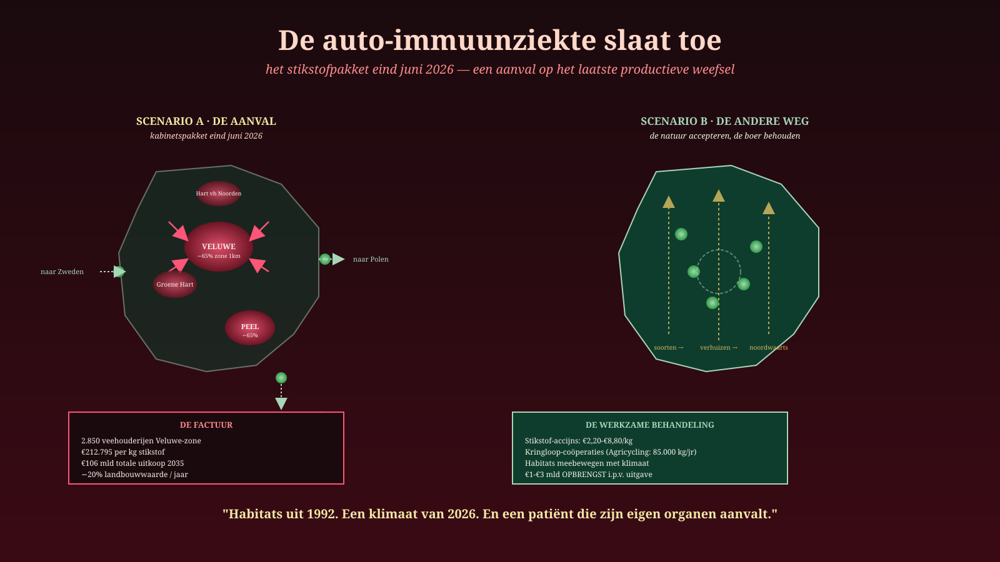
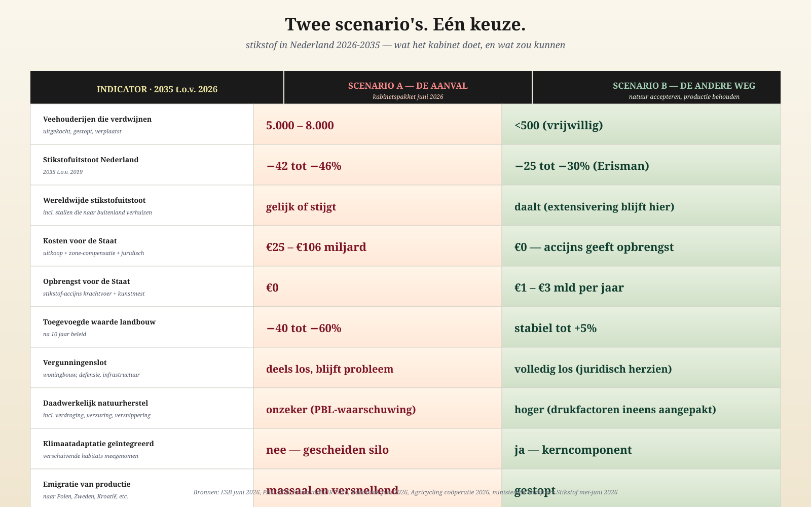

De anti-immuunziekte van onze overheid slaat toe
Het stikstofpakket eind juni 2026 — een aanval op het laatste productieve weefsel. En er is een andere weg.
Jacobus van Merksteijn · 19 juni 2026
Op vrijdag 26 juni presenteert het kabinet-Jetten zijn stikstofpakket. Het zal de zwaarste aanval zijn op de Nederlandse boer in vijftig jaar.
Wat er deze week op tafel ligt:
Zones van 500 tot 1.000 meter rondom twintig grote Natura 2000-gebieden. Daarbinnen moeten 2.850+ veehouderijen rond de Veluwe alleen al verdwijnen, verhuizen of innoveren. Reductie: 65%, ambitie 69%.
Bron: WNL, 17 juni 2026
Landelijke reductie 42-46% voor land- en tuinbouw in 2035. Industrie en mobiliteit: 50%. Bedrijfsspecifieke emissienormen, gedwongen grondgebondenheid melkveehouderij per 2032, voortzetting Lbv-uitkoop.
€212.795 per kilo stikstof kost de Lbv-uitkoop nu al. Een kilo stikstof in krachtvoer kost €1,50. 140.000 keer duurder dan het probleem. Om de regeringsdoelen 2035 via uitkoop te halen: €106 miljard.
Bron: ESB, 16 juni 2026
Toegevoegde waarde landbouw –20% in 2026 alleen. Stallen worden afgebroken en in Polen, Zweden, Kroatië, Peru en Oekraïne weer opgebouwd. Juist de jonge moderne stallen.
Bronnen: Rabobank, 12 juni 2026 · NieuwRechts, 15 juni 2026
Dat is het pakket. Wat het werkelijk is, in de taal van de geneeskunde:
De anti-immuunziekte van onze overheid, die wij in deze krant eerder beschreven, slaat nu volledig toe. De leiding valt het productieve weefsel aan, op grond van rekenmodellen uit 2019, in een klimaat van 2026, om habitats te beschermen die zelf al noordwaarts verschuiven.
De waanzin in één getal
Eén indicator vat de hele ziekte samen.
€212.795. Dat is wat de Staat betaalt om één kilogram stikstof uit een Natura 2000-gebied te krijgen via de Lbv-uitkoopregeling.
Diezelfde kilogram in krachtvoer kost de boer €1,50.
De maatschappelijke schade van die kilo, hoogste raming: €8,80.
Wij geven dus €212.795 uit om €8,80 aan schade te voorkomen. Een verhouding van 1 op 24.000. Geen denkend mens kan zo'n besluit verdedigen. En toch wordt het beleid voortgezet — en zelfs uitgebreid.
Waarom? Omdat het systeem niet meer denkt. Het voert uit. De Raad van State zei in 2019: er moet stikstof omlaag. De modellen zeggen: zoveel per jaar. De ambtenaren zeggen: dus zoveel boeren weg. Niemand vraagt nog: klopt deze hele constructie eigenlijk wel?
Wat de natuur ondertussen doet
Terwijl wij rekenen aan 2019-doelen, beweegt de werkelijkheid.
De boomgrens schuift noordwaarts. Mediterrane soorten vestigen zich in Brabant. Scandinavische naaldbossen krimpen, vogels broeden weken eerder, insecten verleggen hun verspreiding honderden kilometers per decennium.
De habitats waarvoor wij boeren uitkopen, verhuizen zelf uit hun beschermde gebieden weg.
Wij beschermen postzegels van vegetatietypen die het klimaat daarvoor niet meer biedt. Wij vechten voor het bestaan van soorten op plekken waar zij niet meer willen zijn. En wij doen dat door de boeren die ze zouden kunnen ondersteunen — via natuurinclusieve landbouw, kringlooplandbouw, bodemkoolstof — wég te kopen.
Dat is geen beleid. Dat is een auto-immuun-reactie op een werkelijkheid die het lichaam niet meer waarneemt.
Twee scenario's
Er zijn precies twee paden voor de komende tien jaar. Het ene is het pakket van vrijdag 26 juni. Het andere is wat een gezonde leiding zou doen.

Tien indicatoren. Twee uitkomsten. De keuze ligt deze week op tafel.
Scenario A — Het kabinetspakket
Het systeem voert de auto-immuunziekte tot het einde door.
- 5.000 tot 8.000 veehouderijen verdwijnen
- Landbouwwaarde krimpt met 40 tot 60% over tien jaar
- Stallen verhuizen massaal naar het buitenland — daar groeit veestapel
- Wereldwijde stikstofuitstoot blijft gelijk of stijgt
- Kosten Staat: €25 tot €106 miljard
- Vergunningenslot blijft probleem (PBL: stikstof blijft drukfactor)
- Natuur herstelt onvoldoende — verdroging en verzuring blijven onaangetast
- Klimaatverschuiving wordt niet meegenomen
Een patiënt die zwakker wordt onder steeds zwaardere medicatie. Een land dat zijn eigen productieve cellen aanvalt om habitats te beschermen die er straks niet meer zijn.
Scenario B — De andere weg
Drie principes. Geen aanval meer op het productieve weefsel.
Eén. Belast wat je wilt verminderen, in plaats van wegjagen wat je nodig hebt. ESB-onderzoek wijst de weg: een stikstof-accijns van €2,20 tot €8,80 per kilo op krachtvoer en kunstmest. Geen complete bedrijven onteigenen — een gerichte prikkel die boeren toelaat te kiezen voor extensivering, kringloop of doorgaan. Opbrengst: €1 tot €3 miljard per jaar. Voor de Staat een netto opbrengst in plaats van een netto kostenpost.
Twee. Stop met zonering en uitkoop. Lbv en Lbv-plus per direct beëindigen. De 500- en 1.000-meterzones intrekken. De juridische grondslag (KDW als rechtsnorm) vervangen door een gebiedsdoelstelling die meebeweegt met klimaatverschuiving. Het kabinet werkt zelf al aan vervanging van KDW door emissiedoelen per sector — dat is een opening die nu radicaal moet worden ingevuld.
Drie. Accepteer dat habitats verschuiven. Natura 2000 stamt uit 1992. De Habitatrichtlijn gaat uit van statische gebieden. Maar leefgebieden bewegen mee met het klimaat. Het Natuurplan dat Nederland 1 september 2026 bij Brussel moet indienen kan dit nieuwe principe verankeren: bescherm meebewegend leefgebied, niet onveranderlijke postzegels van verouderde vegetatie.
Het levende bewijs dat het kan
In Friesland werkt een coöperatie van boeren onder de naam Agricycling. Zij verwerken stedelijke reststromen tot compost en vervangen daarmee kunstmest.
In 2025 verwerkten zij 12.600 ton reststromen tot 11.340 ton compost. Daarmee vervingen zij 317.940 kg kunstmest — wat overeenkomt met 85.844 kg stikstof. Geen uitkoop, geen subsidie van €212.795 per kilo. Een werkende kringloop met netto maatschappelijke waarde van €4,4 miljoen per jaar.
Eén coöperatie. Een handvol boeren. Schaalbaar tot heel Nederland. Maar het past niet in het kabinetspakket — want het vereist boeren die blijven, en het pakket is gebouwd op het idee dat boeren weg moeten.
Scenario A: €212.795 per kg stikstof minder, via uitkoop.
Scenario B: 85.000 kg stikstof per jaar vervangen via kringloop, met opbrengst.
Beide werken. Eén doodt de boer. Eén versterkt hem.
Wat de wetenschap allang weet
Het meest pijnlijke aan deze situatie: er is geen wetenschappelijk debat meer.
- ESB (16 juni 2026): uitkoop werkt niet, belasten en veilen wél
- Hoogleraar Erisman (Tweede Kamer, 2026): nationaal 25% reductie volstaat, mits gericht aangepakt — niet de 42-46% die het kabinet eist
- PBL (Nieuwe Oogst, 21 mei 2026): stikstofreductie alleen leidt niet tot natuurherstel — verdroging en verzuring zijn even grote drukfactoren
- Agricycling Friesland: kringlooplandbouw levert concreet bewijs dat het anders kan
- Wageningen UR: bufferstroken hebben 5 tot 10% effect op stikstof in water, maar pas na 1-5 jaar — generiek beleid haalt de doelen niet
Allemaal hetzelfde signaal. En de leiding negeert het allemaal. Niet uit kwade wil. Omdat zij het ziek niet kan herkennen.
Wat nu moet
De vijf besluiten van de eerste honderd dagen
- Stikstofpakket van 26 juni intrekken. Niet aanpassen, intrekken. Het is fout in zijn fundament.
- Lbv en Lbv-plus per direct stoppen. Het uitkoopcircuit ontmantelen. €212.795 per kg is geen beleid.
- Stikstof-accijns invoeren. €2,20-€8,80 per kg op krachtvoer en kunstmest. Opbrengst naar natuurinclusieve transitie en kringlooppilots.
- KDW als rechtsnorm afschaffen. Vervangen door emissiedoelen per sector, gekoppeld aan meebewegend habitatconcept.
- Natuurplan 1 september 2026 herschrijven. Bescherm meebewegend leefgebied. Erken klimaatverschuiving als gegeven. Stop met postzegels uit 1992.
Het einde van het zelfbedrog
Het kabinetspakket van vrijdag 26 juni zal worden gepresenteerd als "evenwichtig", "wetenschappelijk gefundeerd" en "noodzakelijk". Het zal worden gesteund door GroenLinks-PvdA, D66, VVD, CDA, NSC en grotendeels door de werkgeversorganisaties en FNV.
Het zal gepresenteerd worden als de oplossing.
Het is de ziekte. De anti-immuunziekte van onze overheid, die nu zijn meest agressieve fase ingaat.
En precies op dat moment moet de inwoner zeggen: dit niet. Niet met onze namen. Niet met onze stemmen. Niet met onze stallen, ons land, onze toekomst.
Er ligt een ander pakket klaar. Het kost niets. Het brengt op. Het laat de boer leven. Het laat de natuur ademen. Het accepteert het klimaat. Het mist alleen één ding: een leiding die kan denken.
Tot die er is, ligt de verantwoordelijkheid bij ons. Bij de boer die niet wegwil, bij de DGA die nog gelooft, bij de mkb'er die het ziet komen, bij de werknemer die het op zijn loonstrook voelt.
Wij zijn de Treg-cellen. Wij zijn de gezonde tegenkracht die de auto-immune cellijn buitenspel kan zetten — maar alleen als wij ons opwekken.
26 juni komt eraan. Het pakket komt eraan. Het is tijd om het te weigeren. En om het andere op tafel te leggen.